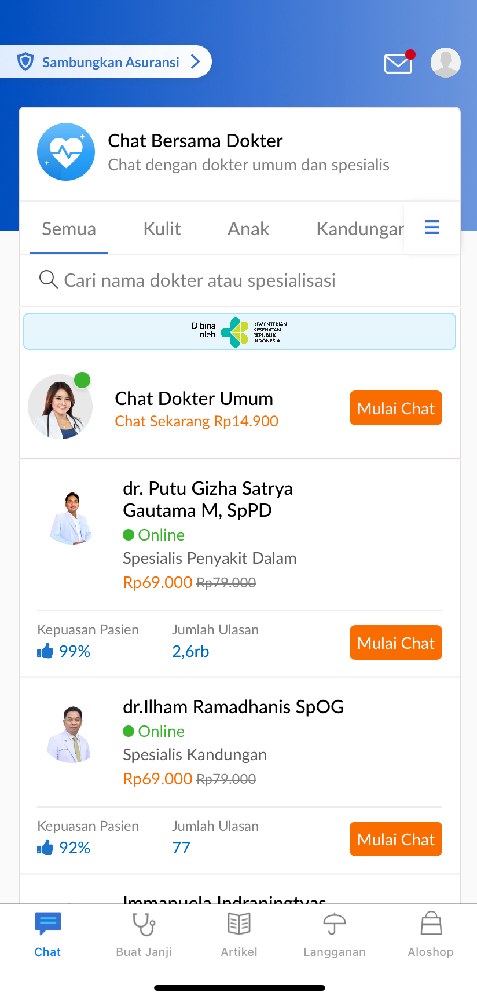

System Development
Alodokter & Alomedika Apps Revamp

Led the backend development efforts for a comprehensive UI/UX revamp of both the Alodokter and Alomedika mobile applications.
Restructured and optimized API responses to support the new interface designs while ensuring backward compatibility and performance improvements throughout the platform.
- CompanyAlodokter
- RoleFullstack Developer
- Year2019
Key Contributions
API Restructuring
- Redesigned API endpoints to efficiently support the new UI/UX requirements.
- Optimized data structures and response formats for improved mobile client performance.
- Implemented versioning strategies to maintain backward compatibility with existing clients.
- Created new endpoints to support enhanced application features and functionality.
Performance Optimization
- Refactored database queries to improve response times for critical application flows.
- Implemented advanced caching strategies using Redis to reduce database load.
- Optimized JSON serialization for faster data transfer to mobile clients.
- Reduced API payload sizes through selective data inclusion and compression techniques.
Documentation & Standards
- Created comprehensive API documentation using Swagger.
- Established consistent response formats and error handling across all endpoints.
- Implemented standardized naming conventions and URL structures.
- Developed integration test suites to ensure API reliability.
Backend Infrastructure
- Enhanced search functionality through Elasticsearch optimization.
- Implemented background processing with Sidekiq for non-critical operations.
- Created efficient data aggregation pipelines for complex UI components.
- Improved system monitoring and error tracking for production environments.
Collaboration & Communication
- Worked closely with frontend and mobile development teams to align API capabilities with UI needs.
- Participated in technical planning sessions to define API requirements and timelines.
- Provided technical guidance on backend capabilities and constraints.
- Conducted code reviews and knowledge sharing sessions with the development team.
Technology Stack
- BackendRuby on Rails
- DatabaseMongoDB with Mongoid ORM
- CachingRedis
- SearchElasticsearch
- API DesignRESTful API
- Background ProcessingSidekiq
- DocumentationSwagger
- Version ControlBitbucket
Results
The API revamp successfully supported the new UI/UX designs for both Alodokter and Alomedika applications, resulting in improved user experience, faster application performance, and enhanced feature capabilities.
The optimized backend infrastructure provided a solid foundation for future application growth while maintaining high reliability and scalability.